Рэестр слоўніка складаецца з некалькіх частак: 1) арыгінальны (не зменены) рэестр; 2) асучаснены рэестр (у тэксце падаецца ў квадратных дужках), які змяшчае загаловачныя словы, адаптаваныя да нормаў сучаснага беларускага правапісу.
Кожны з іх пададзены ў прамым алфавітным парадку і ў адваротным:
Арыгінальны рэестр (прамы парадак)
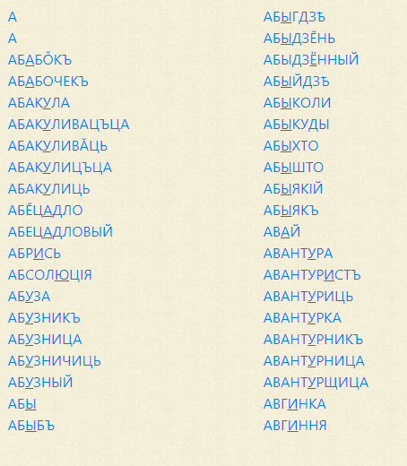
Асучаснены рэестр (прамы парадак)
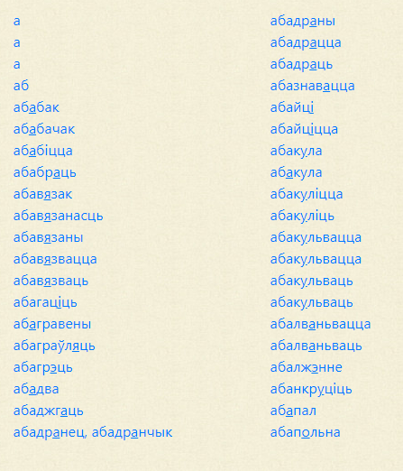
Арыгінальны рэестр (адваротны парадак)
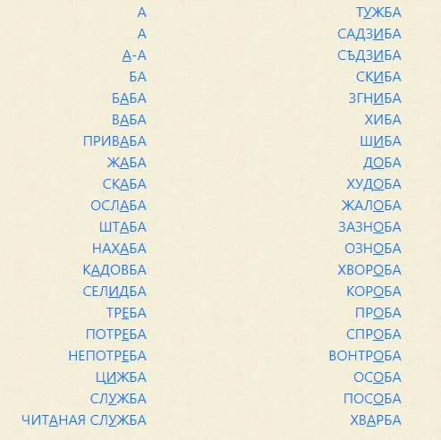
Асучаснены рэестр (адваротны парадак)
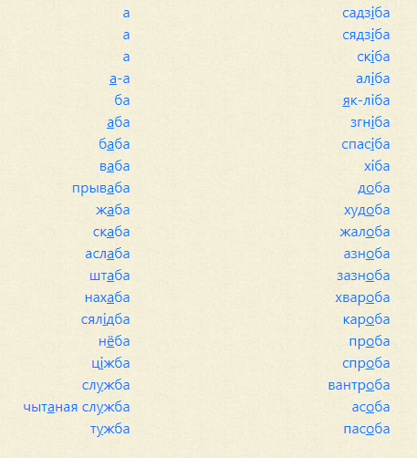
У кожным рэестры можна праглядаць слоўнікавыя артыкулы, націснуўшы на загаловачнае слова:
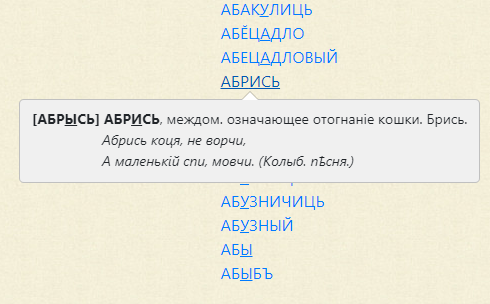
Пошук можна рабіць у трох рэжымах: па загаловачным слове, па загаловачным слове і па тэксце, па асучасненых і ключавых словах
Па загаловачным слове: пошук робіцца па арыгінальным рэестры Слоўніка Насовіча. Для палягчэння набору адмыслова дададзены літары, якіх няма ў сучасным беларускім алфавіце: и, щ, ъ, ѣ. Словы трэба набіраць так, як яны пададзены ў арыгінальнай версіі слоўніка (без уліку рэгістра):
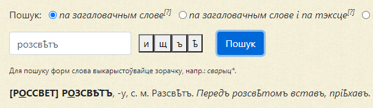
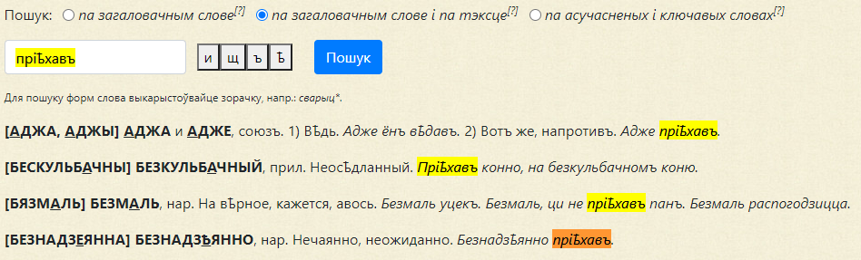
Па загаловачным слове і па тэксце: пошук ідэнтычны папярэдняму, але дадаецца яшчэ пошук па арыгінальным тэксце:
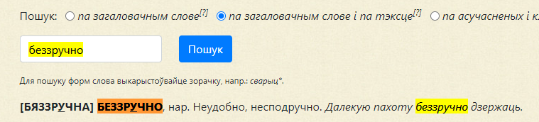
Па асучасненых і ключавых словах: пошук робіцца па асучасненым рэестры і па полі «ключавыя словы», якое не вынесена ў асобны рэестр. Поле «ключавыя словы» ўтрымлівае сінонімы, гіперонімы, апісальныя канструкцыі і інш. Каб скарыстацца гэтым рэжымам пошуку, дастаткова ўвесці ў поле пошуку любое слова сучаснай беларускай літаратурнай мовы:
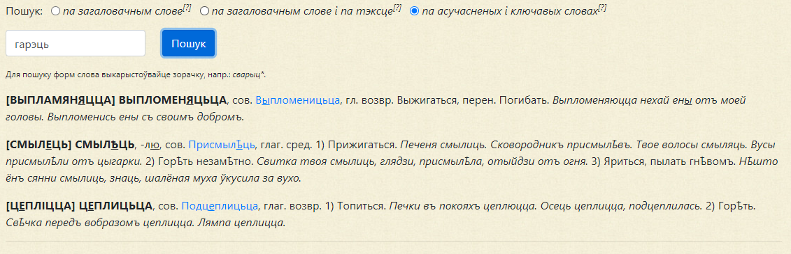
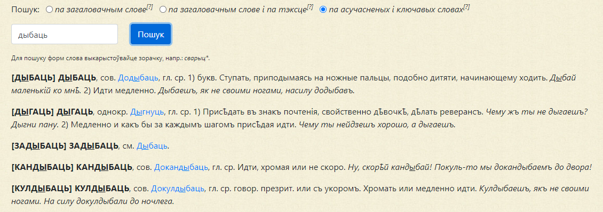
Калі вам трэба знайсці слова з усімі яго формамі, прыставачныя словы з пэўным коранем і інш., раім выкарыстоўваць знак «*». Асабліва гэтая магчымасць прыдасца для пошуку па тэксце:
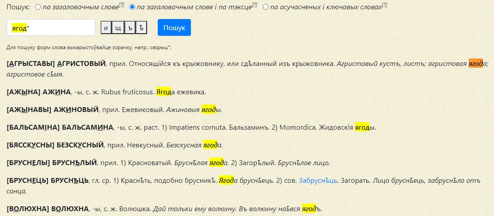